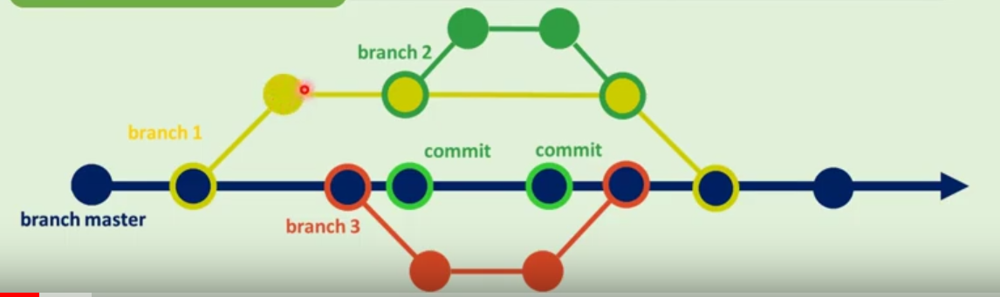

São ramificações de um projeto de software ou documento
e tem como finalidade o desenvolvimento paralelo de:
Podemos colocar em duas categorias:
Branch Master ou Main: Braço principal de um projeto em um repositório.
Branch Secundária: Braço secundário de um projeto em um repositório.
O caso da imagem acima é problemático, caso algum desenvolvedor cometa algum erro, o usuário será afetado.

O caso da master acima é correto, os commits ocorrem em Branchs secundárias e paralelas, não afetando a branch Master
Geralmente para se hospedar um site, é necessário você pagar para poder. Porém o GITHUB oferece uma ferramente muito interessante, gratuitamente.
O GITHUB PAGES, para utilizar, basta criar uma conta e um repostitório público.
e a URL será: https://nomeusuario.github.io/repositorio
Com o aplicativo do GITHUB Desktop, você deve ir em: Branch, New Branch, Nomear o Branch. Como segue as imagens.